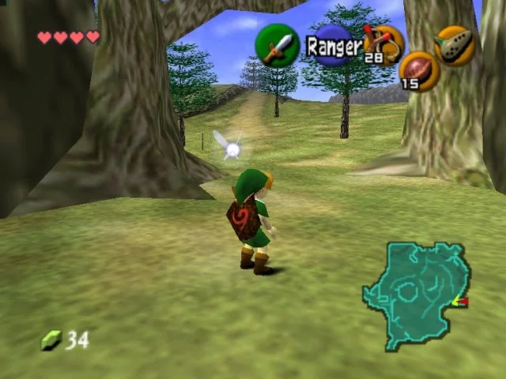
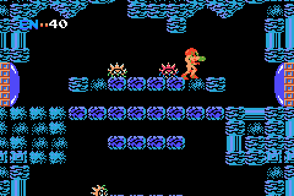
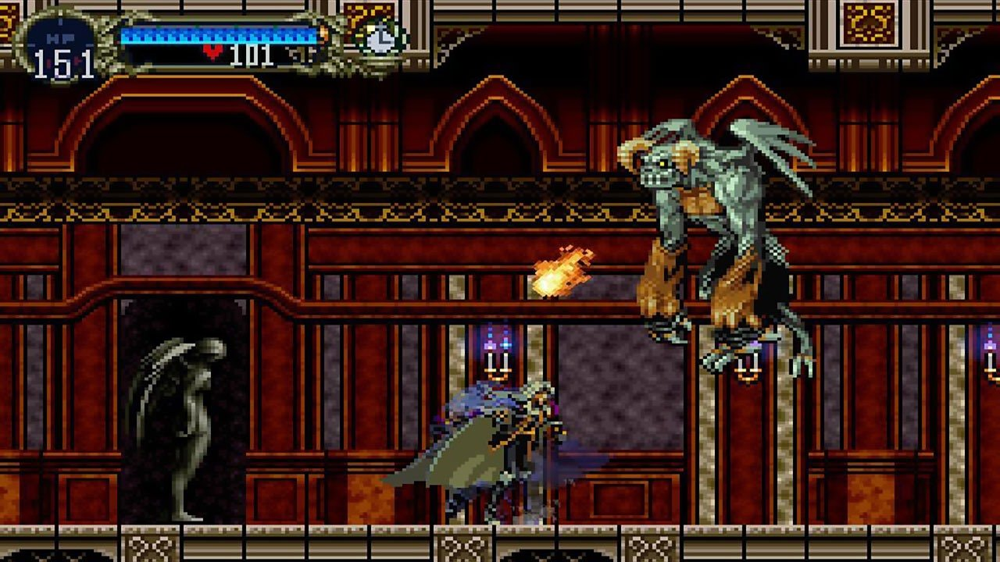
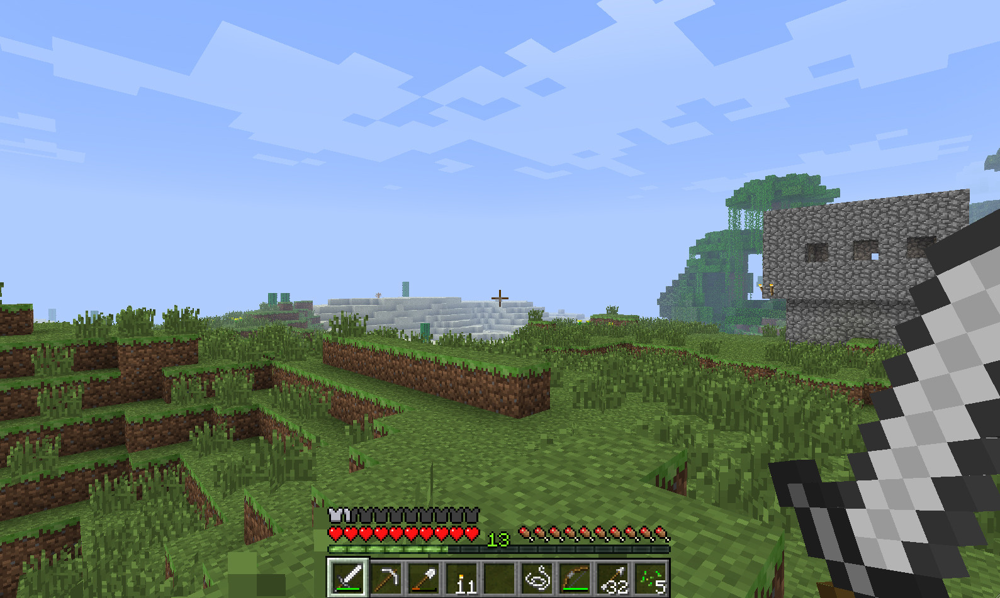
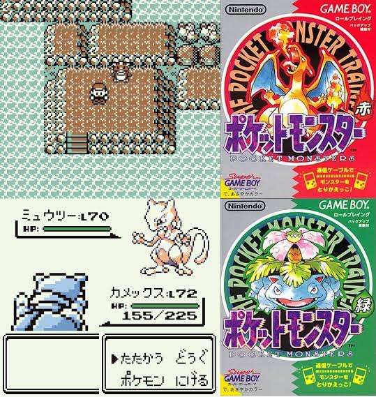

Olá,
Lançado para o Nintendo 64, praticamente definiu como seria uma aventura em 3D. Tem um mundo grande para explorar, masmorras cheias de quebra-cabeças e uma história marcante.
O que ele trouxe de novo:
Lançado há anos.

The Legend of Zelda: Ocarina of Time (Nintendo 64)
Os dois juntos criaram um gênero inteiro: o Metroidvania, que segue vivo em sucessos como Hollow Knight e Ori.
Trocou as fases em linha reta por um grande mapa interligado. Você ganha habilidades novas e volta a lugares antigos para abrir caminhos. No final, revela que Samus Aran era uma mulher, algo raro na época.
Lançado há anos.
Começou como um jogo de ação com clima de terror gótico. Em 1997, Symphony of the Night juntou esse clima com a exploração de Metroid e coisas de RPG, como níveis e equipamentos.
Lançado há anos.

Metroid (NES)

Castlevania: Symphony of the Night (PlayStation)
Criado por Markus "Notch" Persson, da Mojang, redefiniu o estilo sandbox. O mundo é praticamente infinito e você pode quebrar e construir qualquer coisa, bloco por bloco: de uma casinha simples a cidades inteiras.
O que ele trouxe de novo:
Lançado há anos.

Minecraft
Pokémon Red e Green chegaram ao Game Boy com uma ideia simples e viciante: capturar, colecionar e treinar monstrinhos. O criador, Satoshi Tajiri, se inspirou na infância, quando passava os dias caçando insetos.
O que ele trouxe de novo:
Lançado há anos.

Pokémon Red e Green (Game Boy)
Hoje muita gente acha que jogo bom é jogo com gráfico ultrarrealista. Mas nenhum dos jogos desta página ficou famoso pelo visual: eles marcaram pela criatividade, pelo game design e pela diversão. Dá para ver isso no caminho de duas empresas:
Deixou o Symphony of the Night de lado por ser 2D e apostou num jogo 3D, que fracassou. Depois passou a pensar só no lucro e deixou a série mais de 10 anos parada. Hoje vive principalmente de máquinas de caça-níquel no Japão.
Criou o Metroid Prime, em 3D e primeira pessoa, mas não abandonou os jogos 2D, que continuam saindo até hoje. Ouviu os fãs, manteve a essência e a série está viva até agora.